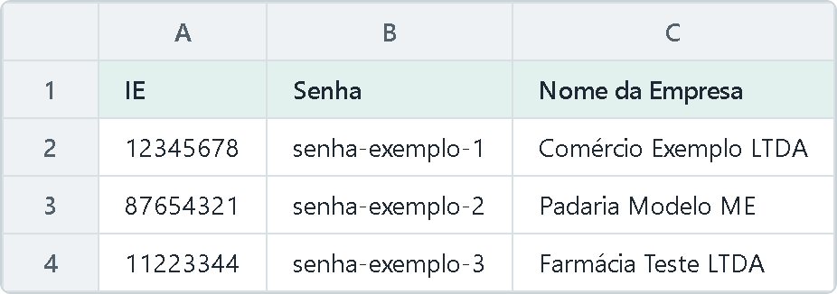
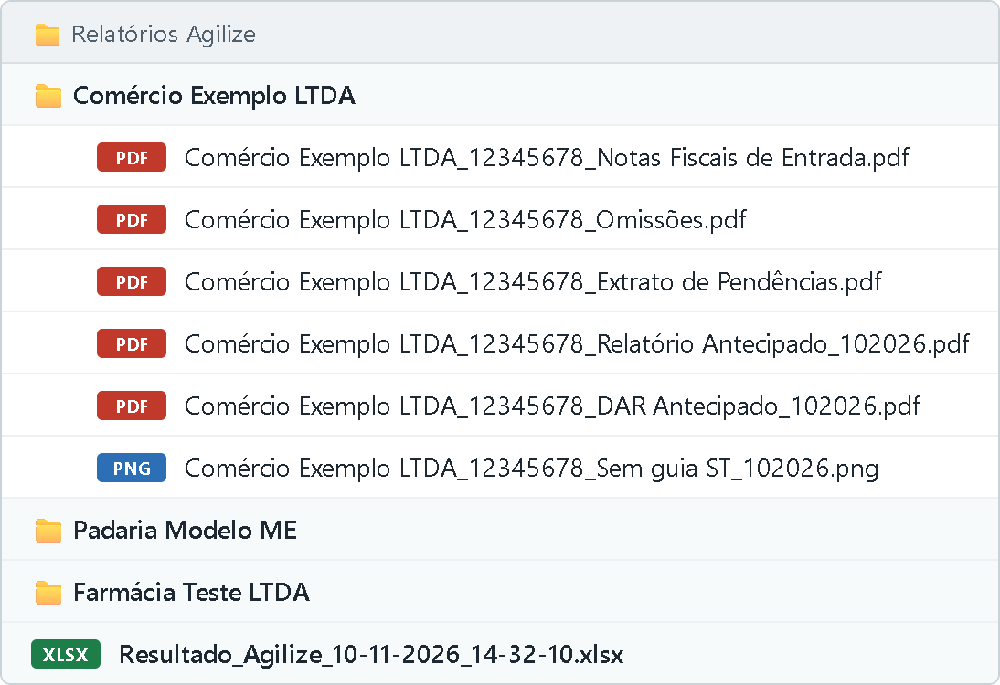
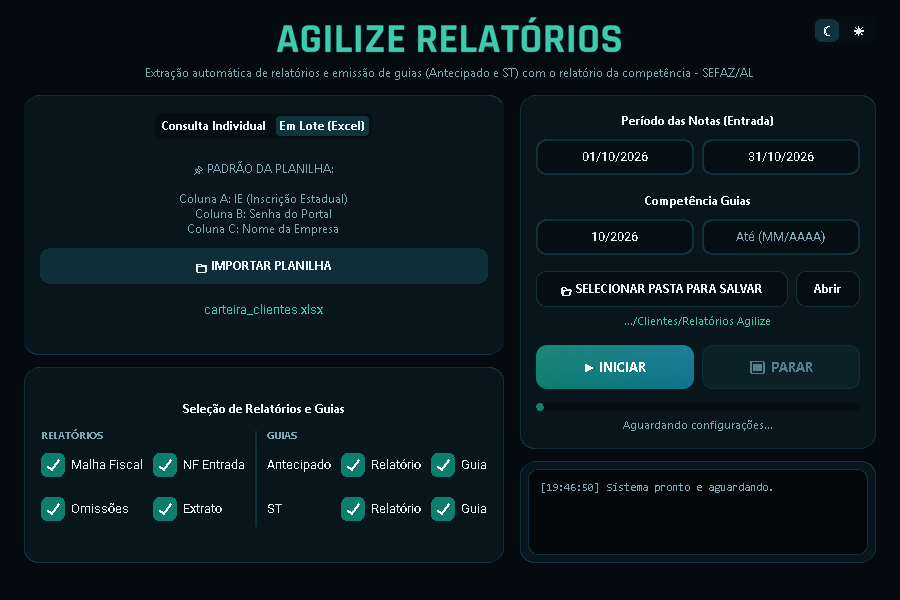
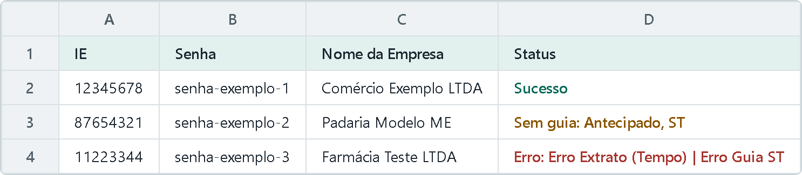
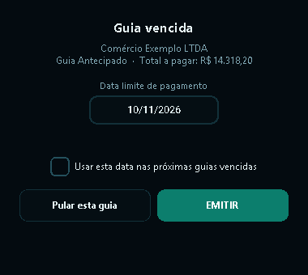
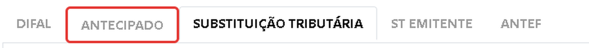

Malha Fiscal
Os 3 relatórios da malha, salvos em PDF.
SEFAZ/AL · para contadores e analistas fiscais
Malha Fiscal, NF de Entrada, Omissões, Pendências e as guias Antecipado e ST, em lote, a partir de uma planilha.

Para tirar a situação fiscal de um cliente no portal da SEFAZ/AL, o caminho é sempre o mesmo:
Multiplicado por dezenas de clientes, todo mês.
Tudo numa única execução, para uma empresa ou para a carteira inteira.
Os 3 relatórios da malha, salvos em PDF.
Notas fiscais de entrada, com filtro por período.
O relatório de omissões de cada empresa.
As pendências da empresa no portal.
Relatório completo e DAR em PDF, por competência ou período. Marcados separadamente.
Relatório e DAR da ST, também separados: dá para tirar só o relatório.
Uma linha por empresa: Inscrição Estadual, senha e nome. Ou consulte uma empresa só.
Relatórios, guias, período das notas e competência.
O programa faz o resto e mostra o andamento empresa por empresa.


Empresa_IE_Relatório.pdf.

Quando a guia está vencida, o programa mostra a empresa, o tipo e o total a pagar e pede a data limite de pagamento, que define multa e juros. Dá para pular a guia ou usar a mesma data nas próximas empresas do lote. Se o portal recusar a data (fim de semana, feriado), a janela volta com o motivo.

Se a empresa não tem guia na competência, nada é emitido: o programa salva um print da tela com a aba contornada em vermelho.
Ao reemitir, o portal cancela o DAR anterior. O programa apaga os arquivos de DAR antigos daquela competência para ninguém pagar o errado.
A falha em um relatório não derruba a empresa, e a falha em uma empresa não derruba o lote. Tudo vai para a planilha de status.
Os arquivos já saem organizados. A pasta só é criada se algo for salvo.

Peça o seu acesso de teste.
Rode com a sua carteira de verdade.
Você continua usando sem interrupção.